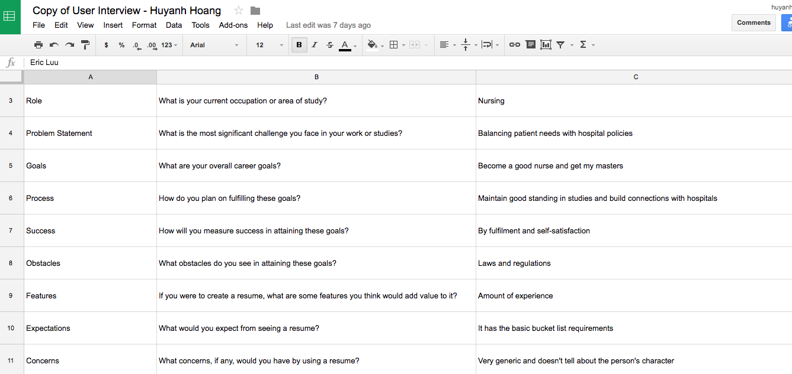
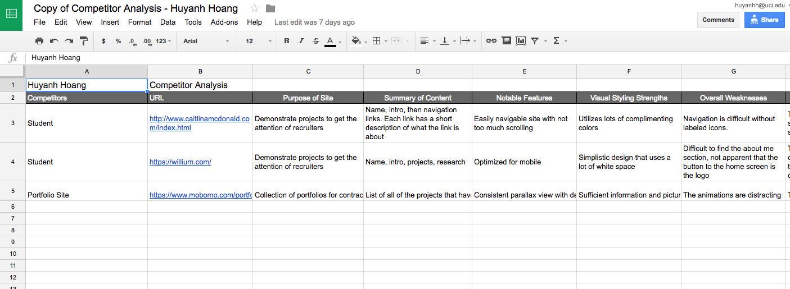
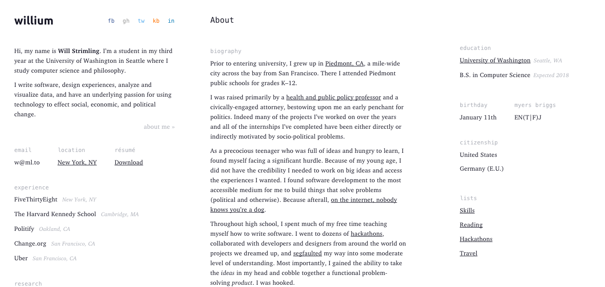
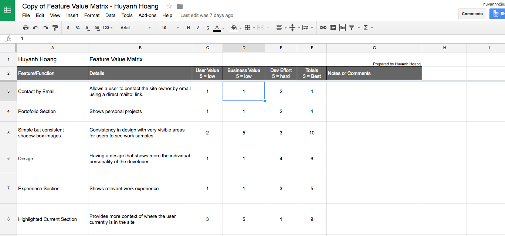
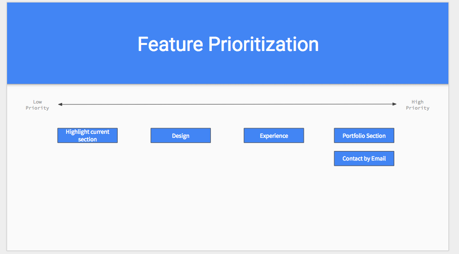
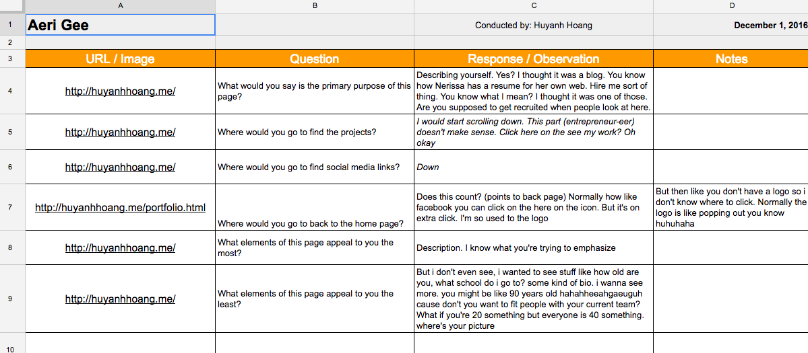

print("Hello, Huyanh")
/* Project Description */
openProject()
User interviews helped me figure out what kind of other candidates expect in their portfolios. Perhaps there were additional problems that would have gone undiscovered if I had not asked other students. The main questions that helped me understand were questions about features and expectations.
View Interviews Competitor analysis is good to get a sense of the strengths in weaknesses in the portfolios of other people competing against you. I reviewed two students from different universities who had jobs working at Uber and Airbnb, and then I reviewed an online portfolio repository. These are all competitors who had overall stronger portfolios than I did, so I wanted to see where I can improve in terms of their weaknesses.
View Competitors  A feature value matrix allows you to inspect each feature and weigh how much value it brings to your overall product. I weighed the 8 most important features of my site. Completing the matrix allowed me to deselect features that I was initially biased in and focus on the more important ones.
View Matrix Using the feature value matrix, I was able to place the features that I needed to ship as quick as possible onto an organized timeline. If I go from right to left, even if I don't get all of them done by a deadline, the more necessary features will be complete.
View Feature Prioritization User stories helped me understand what the users need. It serves as a checkpoint to see if I have the right features in mind before I build them. After doing user stories I was able to evaluate if I have all the features that I wanted.
View User StoriesFor the cognitive walkthrough I went through the actual website with users and observed how they react to each instruction that I give. I used the user stories as my hypothesis and tested it with my users. Sometimes users did not give any information, and others gave too much unrelated information. Overall these revealed the actual problems I have with my site.
View Cognitive Walkthrough I conducted a click test and a preview test. The preview test was a 5 second examination to see if the website were interesting enough to move forward, since the first impressions are usually made within the first 5-10 seconds of seeing something new. The other test was done to see where users clicked for information. Test results were mainly uniform for the preview. The click test had results all over the place, however.
When doing user research, I hypothesized that the projects section was the most important part of the portfolio. That section was the one that stood out to me the most when I was doing the competitor analysis and feature prioritization. I did not find the same in my user interviews, however. The users whom I interviewed focused more on the personal aspect of the portfolio. I found that there was a dissonance between these two types of findings.
Keeping my hypothesis in mind, I found that with other users who are students generally commented about the overall aesthetic of the website more so than the features themselves. When I did the tests with the users, they pointed out things that did not have to do with the work that I wanted to present. There were also usability problems with the mobile versions of the website that I showed them.
Since it is evident that I need to first improve the emotional response of my website, I need to do some research first in graphic design then emotional design. I also need to fix the visual bugs that I didn't realize would be a problem when I was building the site. The mobile menu needs to be adjusted a little for people who usually make their windows smaller, although that is a problem that came up only occasionally. Afterwards, I should test it again with the same users and see if they can find usability issues associated with the presentation of the actual projects, which is what the types of users look for on a portfolio site.
{kind=link}
{kind=link}
{kind=link}
{kind=link}
{kind=link}
{kind=link}